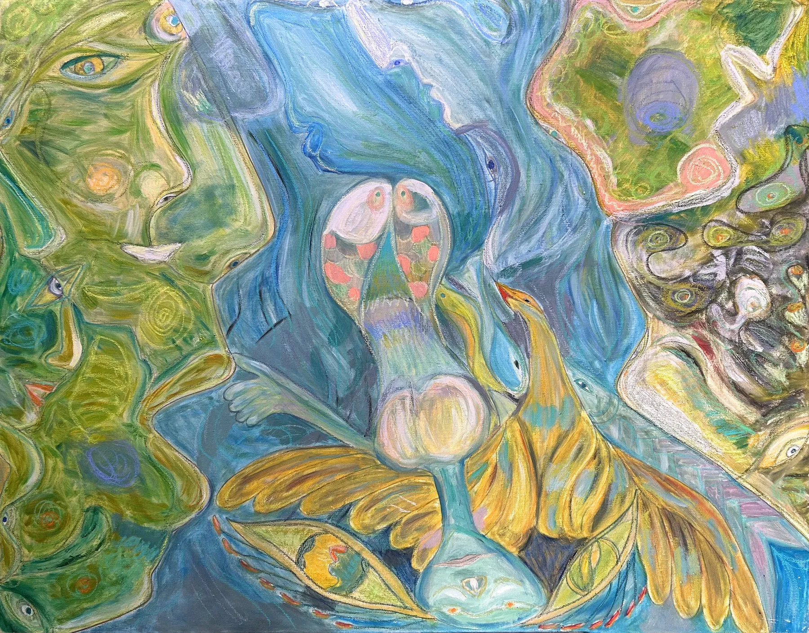
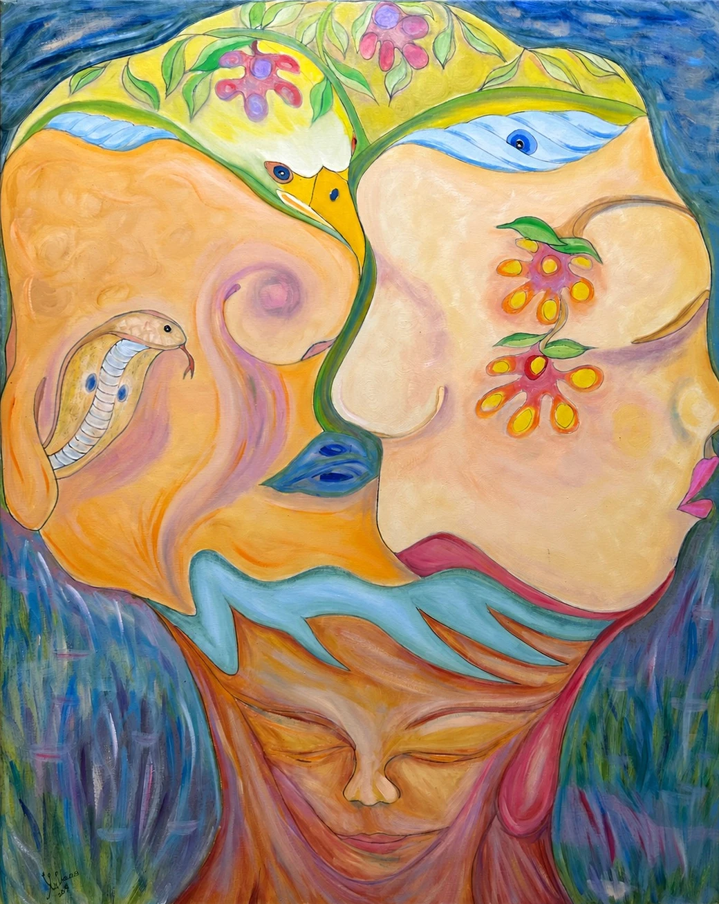
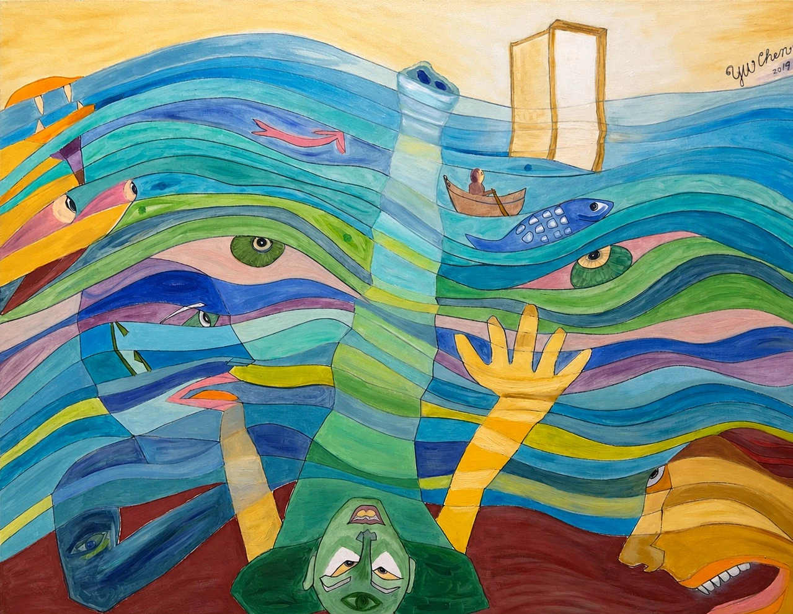

作品觀看 Work View
心象的流動 Inner Worlds in Motion
色彩、記憶與想像在畫面中交會，臉孔、植物與流動的形體彼此轉化，讓內在世界逐漸顯現。 Color, memory, and imagination meet on the canvas; faces, plants, and flowing forms turn into one another, letting an inner world gradually appear.
眾視之中—向海而生 Among Many Gazes - Toward the Sea

視之所生—樹之腦 Born of Seeing - The Tree's Mind

被視之流—希望之門 Current of Being Seen - Gate of Hope

這些畫沒有一張是靜止的。洪水、夢境、墜落與托舉——有事情正在發生，而且有先後。顏色始終明亮，即使畫的是不友善的環境。 None of these paintings stands still. A flood, a dream, a falling and a catching — something is happening, and it happens in sequence. The color stays bright, even when what is painted is not a kind world.